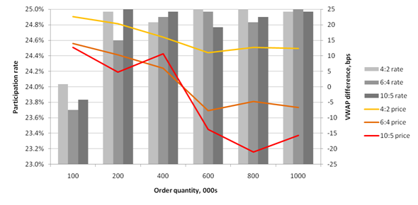

This series looks at building a near full-scale application in q and, in the process, tries to answer questions on the amount of code a q application requires, and how that code can be organised so that it is both comprehensible and straightforward to change. The target application is a participation strategy and some of its associated testing framework.
In this final installment the participation strategy is run in some trials against the qx market. Previously in this series: the "near" execution tactic.
The participation strategy was run with a 25% rate and a variety of order quantities against an order book supported by a market maker and a "noise" trader (more on this later). Three allocation schemes are explored: allocating four units of minsize with a low of two (4:2); plus schemes 6:4 and 10:5. The average results of three runs for each quantity and scheme are summarised in the chart below.

The performance against VWAP is shown to highlight the impact of execution on both the near and far side of the book. Some observations:
maxtake was a frequent throttle on participation with 10-20 maxtake alarms per run, indicating shortages of liquidity in qx.
The noise trader is another variant of user.q, this time a script that regularly interacts at random with the market. Timing is through the .z.ts function: these trials are not dependent on time between trades, so there is no variation introduced there. The actions are chosen from amongst a number of .process.upd functions: by now this should not be a surprise. Randomisation is powered through the useful rand function in q to choose the action, direction, quantity and number of ticks for price changes.
Until now cancels have not been acknowledged by qx. That worked for market making and simple pegging but causes serious issues for reallocation between tactics and for "completing" behaviour. Consequently qx.q now acknowledges cancels.
member.q gets a cancels function.
upd[`cancel] to qx will receive a table of id's - even if those id's are no longer in qx.
upd[`cancels], so the logic for zero quantity filling can be dropped.
.tactic.cancelled.
allocation.q now recognises the situation where the far allocation is complete while the near allocation is not, and reallocates the remaining quantity. A defect in checking the low threshold is also fixed.
The redundant minqty column has been dropped from the controlnear table. Moreover, minqty has been renamed throughout to minsize: minqty has a specific meaning in FIX and will be resurrected for implementing completing behaviour.
Other defects fixed include: a feedback problem with the market maker responding to the quote sent by qx on a cancel; and a couple of situations in near.q and far.q where direct references were being made to columns of a keyed table.
This installment has added 23% more lines of code. The full codebase is now:
| Lines of code | ||
|---|---|---|
qx.q | 113 | |
participation.q | 108 | |
near.q | 86 | |
far.q | 85 | |
marketmaker.q | 75 | |
noise.q | 48 | |
allocation.q | 21 | |
schema.q | 18 | |
filter.q | 18 | |
user.q | 13 | |
tactic.q | 13 | |
player.q | 12 | |
seq.q | 9 | |
global.q | 6 | |
member.q | 5 | |
util.q | 3 | |
process.q | 2 | |
| 635 |
This is remarkably little code given the range of functionality within the qx market, strategy and other tools. Most of the code is written in a declarative style using the SQL-like statements of q, for both ease of understanding and the efficiency of operating on multiple rows at a time. The seemless working with kdb+ time series tables during testing would be a significant advantage in a full implementation. The use of processes, script files and coding patterns, like upd, has also contributed to the ease of development, although this is not unique to q.
On the downside, the most frequent cause of error has been forgetting the data types in variables (recall those keyed and unkeyed tables): dynamic typing in q means these mistakes cannot be detected at "compilation". This is another good reason to introduce conventions for passing data between functions.
Use of kdb+ in banks has long been focused on collecting time series data in real time. Hopefully this series demonstrates that the combination of high performance, low latency and powerful language constructs means that kdb+ is an ideal platform on which to directly build execution and trading algorithms.
Regarding the strategy itself, the independence of tactics and the allocation mechanism to activate them, its evolution as a general purpose "bot" for a variety of execution styles ... that would require another series of articles.
| 1. | www.kx.com | |
| 2. | Further updates, and more q code, can be found at code.kx.com. This is a secure site: for browsing the user name is anonymous with password anonymous. |